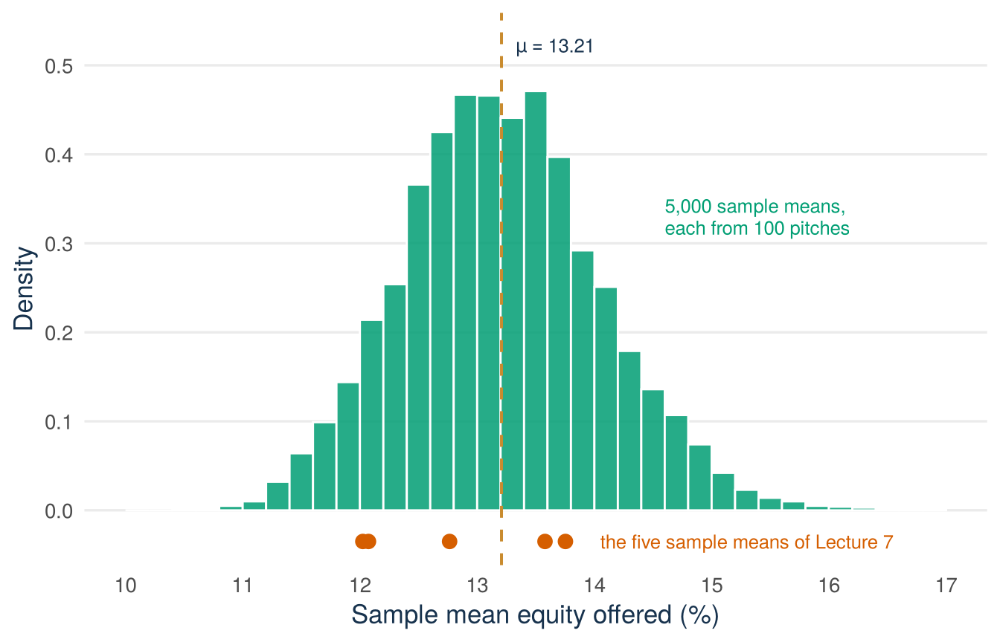

Lecture 8: Sampling distributions and the central limit theorem
By the end of Lecture 8, you can
tell a population distribution apart from a sampling distribution
calculate the standard deviation and the standard error of a sample mean
explain how sample size affects the precision of an estimate
use the central limit theorem for sample means and sample proportions
Driving question
Any number computed from a sample would have come out differently with a different sample. Before acting on an estimate, a careful analyst asks how much such numbers vary from sample to sample, and what reduces that variation.
A random sample of 100 pitches from the Shark Tank file had a mean equity offered of 12.76%. How wrong could that number be, and why can we trust an average even though the equity offered in single pitches is strongly skewed?
Before class
Do all the preparation below before class.
Video preparation Watch The Central Limit Theorem. Focus on which distribution becomes approximately normal as the sample size grows. The video uses \(M_n\) for the sample mean, where this book uses \(\bar X\), and \(\hat\Theta\) for an estimator. The link is also listed in the External Video Guide. The videos explain key ideas in another way and can use a different notation. The lecture material and its notation always come first.
Warm up. Classify each object as a population distribution, a sampling distribution, or a realised estimate:
the distribution of equity offered across the individual pitches in the Shark Tank file
the distribution of \(\bar X\) across all possible samples of 40 pitches
the single mean calculated from one observed sample.
Check your preparation
The first is a population distribution, the second is a sampling distribution, and the third is a realised estimate, the number observed in one sample. Keep the three apart. Lecture 7 named the sampling distribution. This lecture describes it.
Predict. Answer this question before you come to class: to cut the typical error of a sample mean in half, do you need 2, 4, or 10 times as many observations? Choose one answer. You find the correct answer in the lecture material.
This section describes the sampling distribution of the sample mean: where it is centred, how wide it is, and what shape it has. It then applies the same results to proportions.
Start with a founder’s question
An invented example. You sell meal boxes. You asked 100 customers, chosen by chance, to rate the box from 1 to 10, and you calculated the average rating. How far can that average be from the average rating of all your customers? And how many customers would you need to ask to halve this distance?
These ratings are not in the Shark Tank file. This lecture answers the two questions with the Shark Tank file, because for that file the whole population is known. Lecture 7 showed that averages differ from sample to sample. This lecture measures how much they differ.
Lecture 7 drew five random samples of 100 pitches from the Shark Tank file (Figure 7.2). The five sample means of the equity offered (equity_offered_pct) differed, while the population mean stayed fixed at 13.21%. If we drew a sixth sample, where would its mean lie? You cannot say exactly. But you can say something about the range in which it would probably fall. This lecture makes that statement precise.
The distribution behind the five dots
Shark Tank data The sample mean \(\bar X\) is a sample statistic: a number calculated from the sample. We use it as an estimator of the parameter \(\mu\) (Lecture 7). Its value depends on which random sample is drawn. So \(\bar X\) is random, and it has a distribution. The estimate \(\bar x\) is different. It is the one number that an observed sample gives, such as 12.76.
Each of the five dots is one value of \(\bar X\). Imagine not five samples but every possible random sample of the same size, each with its own sample mean. The distribution of those possible values of \(\bar X\) is the sampling distribution of the mean, which Lecture 7 named. It describes the uncertainty of an estimator, not the variation among single pitches. Keep three objects apart:
The population distribution describes how the equity offered varies across the 1,441 pitches.
The sampling distribution describes how \(\bar X\) would vary across repeated samples.
A realised estimate, such as 12.76, is one draw from that sampling distribution.
This lecture uses three population parameters of the Shark Tank file: the mean and the standard deviation (SD) of the equity offered (equity_offered_pct), and the proportion of pitches that ended with a deal (deal_on_show). The 1,441 records are the whole population, so the SD divides by \(N\) and not by \(n-1\):
So \(\mu = 13.21\)%, \(\sigma = 8.44\) percentage points, and \(p = 0.612\). These are fixed numbers. What varies is any number computed from a random sample of the 1,441 records.
This lecture uses the random sample of 100 pitches from Lecture 7 (seed 123) again:
This sample gives the estimates \(\bar x=12.76\)%, \(s=7.71\) percentage points, and \(\hat p=0.64\). Another random sample would give other estimates.
We can make the sampling distribution of \(\bar X\) visible. The code below draws 5,000 random samples of 100 pitches and keeps the mean of each sample. It draws with replacement, so that the draws are exactly independent. Lecture 7 drew without replacement. With 100 out of 1,441 pitches the difference is small (the 10% condition of Lecture 7).
set.seed(708)# replace = TRUE: each sample of 100 is drawn with replacementmany_means <-replicate(5000, mean(sample(sharks$equity_offered_pct, 100,replace =TRUE)))c(average =mean(many_means), SD =sd(many_means))
average SD
13.2094611 0.8435715
quantile(many_means, c(0.025, 0.975)) # the middle 95% of the sample means
2.5% 97.5%
11.63098 14.93525
Figure 8.1 shows the 5,000 sample means as a histogram.
See the R code for this figure
library(ggplot2)sharks <-read.csv("data/shark_tank_teaching.csv", stringsAsFactors =FALSE)mu_equity <-mean(sharks$equity_offered_pct)# 5,000 random samples of 100 pitches, drawn with replacement,# one mean per sampleset.seed(708)many_means <-replicate(5000, mean(sample(sharks$equity_offered_pct, 100,replace =TRUE)))# the five sample means of Lecture 7 (seeds 101 to 105),# drawn without replacement as in Lecture 7seeds <-101:105five_means <-numeric(length(seeds))for (i inseq_along(seeds)) {set.seed(seeds[i]) rows <-sample(seq_len(nrow(sharks)), size =100, replace =FALSE) five_means[i] <-mean(sharks$equity_offered_pct[rows])}five_dots <-data.frame(sample_mean = five_means, density =-0.035)ggplot(data.frame(sample_mean = many_means), aes(sample_mean)) +geom_histogram(aes(y =after_stat(density)),breaks =seq(10, 17, by =0.2),fill ="#009E73", alpha =0.85, colour ="white") +geom_vline(xintercept = mu_equity, linetype ="dashed",colour ="#C98B2E", linewidth =0.7) +geom_point(data = five_dots, aes(sample_mean, density),colour ="#D55E00", size =3) +annotate("text", x = mu_equity +0.12, y =0.52,label ="mu == 13.21", parse =TRUE,colour ="#17324D", size =3.4, hjust =0) +annotate("text", x =14.05, y =-0.035,label ="the five sample means of Lecture 7",colour ="#D55E00", size =3.4, hjust =0) +annotate("text", x =14.6, y =0.33,label ="5,000 sample means,\neach from 100 pitches",colour ="#009E73", size =3.4, hjust =0, lineheight =0.95) +scale_x_continuous(breaks =10:17) +scale_y_continuous(breaks =seq(0, 0.5, by =0.1),expand =expansion(mult =c(0.02, 0.05))) +coord_cartesian(xlim =c(10, 17), ylim =c(-0.05, 0.53)) +labs(x ="Sample mean equity offered (%)", y ="Density") +theme_minimal(base_size =13) +theme(panel.grid.minor =element_blank(),panel.grid.major.x =element_blank(),plot.caption =element_text(colour ="#5B6976"),axis.title =element_text(colour ="#17324D") )

Figure 8.1: Histogram of 5,000 sample means of the equity offered, each from a random sample of 100 pitches (green). The histogram is centred on the population mean (gold dashed line at 13.21). The five sample means of Lecture 7 (orange dots) are five draws from this distribution.
Each bar counts sample means, not pitches. The five orange dots below the histogram are the five sample means of Lecture 7. They are five draws from this distribution, and the mean of a sixth sample would be one more draw. About 95% of the 5,000 sample means lie between 11.6% and 14.9%. A sixth sample mean would probably fall in this range. It would rarely fall far outside it.
Back to the lab
Shark Tank data In Lecture 7 you worked with the sampling-distribution lab: the histogram of sample means was centred near 13.2, became narrower as \(n\) grew, and became bell-shaped, although the distribution of the population is strongly right-skewed. That histogram, like Figure 8.1, shows the sampling distribution of the mean. The next sections explain its centre, its spread, and its shape.
The mean and variance of a sample mean
Shark Tank data Let \(X_1,\ldots,X_n\) be a random sample of independent and identically distributed (iid) variables, as in Lecture 7. The sample mean is the estimator
Write \(\mu\) for the population mean and \(\sigma^2\) for the population variance. The \(X_i\) are identically distributed (Lecture 7), so all of them have the same mean and the same variance: \(E[X_i]=\mu\) and \(\operatorname{Var}(X_i)=\sigma^2\) for every \(i\). Then
The first equality says that \(\bar X\) is an unbiased estimator of \(\mu\) (Lecture 7). In words: if we draw many random samples, the average of their sample means equals the population mean. Figure 8.1 shows this result. The 5,000 sample means have an average of 13.21%, which is the population mean \(\mu=13.21\)%. A single sample mean still misses \(\mu\), sometimes from above and sometimes from below.
The third quantity, \(\operatorname{SD}(\bar X)=\sigma/\sqrt n\), is the standard deviation of the sample mean. It measures how far a sample mean typically lies from \(\mu\). For samples of 100 pitches it is \(8.44/\sqrt{100}=0.844\) percentage points, about 6% of the population mean. The 5,000 simulated sample means have a standard deviation of 0.84, as the formula says.
The three formulas are not new facts. They follow from the rules for rescaling a variable in Lecture 3 and from the rules for sums of variables in Lecture 5:
\(E[X+Y]=E[X]+E[Y]\) and \(E[aX]=aE[X]\), so \(E[\bar X]=\frac{1}{n}\sum_i E[X_i]=\frac{1}{n}\,n\mu=\mu\).
\(\operatorname{Var}(aX)=a^2\operatorname{Var}(X)\) and, for independent variables, \(\operatorname{Var}(X+Y)=\operatorname{Var}(X)+\operatorname{Var}(Y)\), so
Both lines use the fact that every \(X_i\) has the same mean \(\mu\) and the same variance \(\sigma^2\). Independent positive and negative deviations partly cancel in an average. That is why the right-hand histogram in the lab is so much narrower than the population histogram.
Standard deviation or standard error?
Shark Tank data The formula \(\operatorname{SD}(\bar X)=\sigma/\sqrt n\) needs the population standard deviation \(\sigma\). In practice \(\sigma\) is usually unknown, because you have only the sample. Then you replace \(\sigma\) by the sample standard deviation \(S\) (Lecture 7). The result has its own name.
Definition
Standard error (SE). The estimated standard deviation of an estimator, calculated from the sample. For the sample mean, \(\sigma\) is replaced by \(S\): \(\operatorname{SE}(\bar X)=S/\sqrt n\). In one observed sample its value is \(s/\sqrt n\).
Keep three quantities apart:
The standard deviation of the observations, \(\sigma\) in the population and \(s\) in the sample, describes the variation among single observations.
The standard deviation of the sample mean, \(\sigma/\sqrt n\), describes the variation of \(\bar X\) across repeated random samples.
The standard error, \(s/\sqrt n\), is the estimate of \(\sigma/\sqrt n\) that one sample gives.
The standard error is \(7.71/\sqrt{100}=0.771\) percentage points. Here the population is known, so the standard error can be compared with the standard deviation of the sample mean, 0.844. The two are close. Replacing a parameter by an estimate adds a little extra uncertainty. Lecture 9 shows how to take this extra uncertainty into account.
Example 8.1 (Worked example: E, Var, and SD of the sample mean for σ = 12, n = 36) A population has mean \(\mu\) and SD \(\sigma=12\). A random sample of \(n=36\) observations is drawn. Find the mean, the variance, and the standard deviation of \(\bar X\), naming the rule used at each step.
Mean. By the rules for expectations (\(E[X+Y]=E[X]+E[Y]\), \(E[aX]=aE[X]\)), \(E[\bar X]=\mu\): whatever \(\mu\) is, the sample mean is unbiased for it.
Variance. By \(\operatorname{Var}(aX)=a^2\operatorname{Var}(X)\) and the sum rule for independent variables,
Standard deviation. Take the square root: \(\operatorname{SD}(\bar X)=\sqrt 4=2\), which is \(\sigma/\sqrt n=12/6=2\).
A single observation typically lies about \(\sigma=12\) units from \(\mu\). A sample mean of 36 observations typically lies about 2 units from \(\mu\). Averaging 36 observations divides the typical distance by \(\sqrt{36}=6\), and \(12/6=2\). All three rules are on the formula sheet.
Here \(\sigma\) is given, so 2 is the standard deviation of the sample mean. If \(\sigma\) were unknown and the sample gave \(s=11.4\), the standard error would be \(11.4/6=1.9\).
The square-root rule
Precision grows with \(\sqrt n\), not with \(n\). This answers the prediction question from before class: to cut the standard deviation of the sample mean in half you need four times the observations, because
Doubling the sample size does not halve the standard deviation of the sample mean. It only divides it by \(\sqrt 2\approx 1.41\). The same rule holds for the standard error if \(s\) stays about the same, because it has the same \(\sqrt n\) in its denominator. So each extra step in precision costs more and more data. Keep this in mind when you plan the budget for data collection.
The rule also answers the founder’s second question. To halve the typical distance between the average of 100 ratings and the average rating of all customers, 200 customers are not enough. It takes 400. Lecture 9 turns the rule around and gives the sample size for a target precision.
Try it: cut the standard deviation of a sample mean from 4 to 1
Try this with your neighbour first. Complete the missing steps before opening the answer.
Step 1 (given). The standard deviation of the sample mean must fall by a factor of \(4/1 = 4\).
Step 2 (you). The standard deviation of the sample mean is proportional to \(1/\sqrt n\). By what factor must \(n\) change to divide it by 4?
Step 3 (you). If the original sample had \(n=50\), how many observations does the new design need?
Check your answer
Dividing the standard deviation of the sample mean by 4 requires multiplying \(n\) by \(4^2=16\). This is the square-root rule used the other way round. From \(n=50\) the design needs \(16\times 50=800\) observations. Four times the precision costs sixteen times the data.
A larger sample brings the sample mean closer to μ
Shark Tank data The variance \(\sigma^2/n\) shrinks towards zero as \(n\) grows. The sampling distribution of \(\bar X\) becomes narrower and narrower around \(\mu\). An estimator with this property has a name.
Definition
Consistent estimator. An estimator is consistent if, with a larger and larger sample, the estimate comes closer and closer to the population value. The sample mean \(\bar X\) is a consistent estimator of \(\mu\).
The code below shows this for the equity offered (equity_offered_pct) in the Shark Tank file. It draws 1,000 pitches at random, one after another, and calculates the sample mean after each new pitch.
set.seed(196)draws <-sample(sharks$equity_offered_pct, 1000, replace =TRUE)running_mean <-cumsum(draws) /seq_along(draws) # mean of the first n drawsround(running_mean[c(10, 100, 1000)], 2)
[1] 16.15 14.22 13.27
After 10 pitches the sample mean is 16.15%. After 100 pitches it is 14.22%, and after 1,000 pitches it is 13.27%. The distance from \(\mu=13.21\)% falls from 2.94 points to 1.01 points and then to 0.06 points. Figure 8.2 shows the whole path.
Figure 8.2: The sample mean of the equity offered in a growing random sample from the Shark Tank file (green line), for n from 1 to 1,000. For small n the sample mean jumps up and down. As n grows it settles on the population mean (gold dashed line at 13.21).
The green line is the sample mean of the first \(n\) pitches. For small \(n\) it jumps up and down, because one pitch with a very high equity offer moves the mean a lot. As \(n\) grows, the jumps become smaller and the line stays closer and closer to the gold dashed line at 13.21. The line does not come closer at every step. At \(n=350\) it lies further from \(\mu\) than at \(n=250\). Consistency describes what happens when \(n\) becomes very large.
Shark Tank data The formulas for \(E[\bar X]\) and \(\operatorname{SD}(\bar X)\) give the centre and the spread of the sampling distribution, not its shape. For some populations the shape is known exactly. The case that matters in this course is the normal population. If the population itself is normal, the random sample is drawn from a normal distribution \(N(\mu,\sigma^2)\). Then the sample mean is exactly normal for every \(n\): \(\bar X\sim N(\mu,\sigma^2/n)\). The reason is that a sum of independent normal variables is again normal (Lecture 6).
For most populations the exact shape is not known. The equity offered is an example: the distribution of the population is strongly skewed. Still, the histogram of sample means is bell-shaped, in the lab and in Figure 8.1. The central limit theorem describes this pattern.
Definition
Central limit theorem (CLT). For a large random sample (large \(n\)) of iid observations with mean \(\mu\) and variance \(\sigma^2\), the sample mean is approximately normal, whatever the shape of the population distribution: \(\bar X\ \dot\sim\ N\!\left(\mu,\frac{\sigma^2}{n}\right)\).
The dot above \(\sim\) means “approximately”. The approximation improves as \(n\) grows. The mean and the variance of this normal curve are the ones found above: \(E[\bar X]=\mu\) and \(\operatorname{Var}(\bar X)=\sigma^2/n\). The CLT adds the shape.
Figure 8.3 shows a simulation: 5,000 sample means of \(n=5\) draws and 5,000 sample means of \(n=40\) draws from the equity offered (equity_offered_pct). As before, the simulation draws with replacement, so its draws are exactly independent.
Figure 8.3: Simulated sampling distributions of the mean equity offered for n = 5 (left) and n = 40 (right), each based on 5,000 samples, with the corresponding normal approximations (orange curves). Both panels use the same axes.
Read Figure 8.3 with the reading sequence of Lecture 1. (1) Unit and variables: each bar counts simulated sample means, not pitches. The horizontal axis is the sample mean of the equity offered, in percent. (2) Scales: both panels use the same range and the same density scale, so widths can be compared directly. (3) One element: the orange curve in each panel is the normal approximation for that sample size. (4) Pattern: the histogram for \(n=40\) is far narrower and much closer to its normal curve than the histogram for \(n=5\). The histogram for \(n=5\) is still skewed to the right, like the population. (5) Limits: the figure shows random samples from this file. It says nothing about samples that were not drawn by chance.
How large must \(n\) be? Many people use a sample size of at least 30 as a rough guide (a rule of thumb). But no general rule says that \(n=30\) is always enough. Thirty is a common starting point for roughly symmetric data. Strongly skewed data, such as revenues or deal amounts, need more. Extreme outliers and dependence between observations can also require much more data.
The normal model of Lecture 6 returns here. It is not a model for the data. For the equity offered in single pitches it did not fit (Lecture 6). It is a model for the sample mean. You can calculate probabilities for \(\bar X\) with the normal model in two situations:
the population is normal, so that \(\bar X\) is exactly normal for every \(n\)
the sample size \(n\) is large, so that \(\bar X\) is approximately normal by the CLT.
One of the two is enough. In both situations, standardise the sample mean as in Lecture 6:
\[
Z=\frac{\bar X-\mu}{\sigma/\sqrt n}.
\]
\(Z\) is standard normal in the first situation and approximately standard normal in the second.
Take the worked example above (Example 8.1), with \(\sigma=12\) and \(n=36\), so that the standard deviation of the sample mean is 2. Suppose that \(\mu=50\). The sample is large, so by the CLT \(\bar X\) is approximately \(N(50,2^2)\). The probability of a sample mean above 53 is
with the supplied value \(P(Z\le1.5)=0.9332\). A sample mean above 53 occurs in about 7% of random samples.
Sample proportions are sample means
Shark Tank data Many business questions are about a share and not about an average. An example from the Shark Tank file: what share of all pitches ends with a deal? The variable deal_on_show is a 0/1 variable. It is 1 if the pitch ended with a deal and 0 if not. The population proportion \(p\) is the share of ones among the 1,441 pitches, here \(p=0.612\).
A 0/1 variable is a Bernoulli variable \(X\) with \(P(X=1)=p\) (Lecture 3). Its mean and variance are
The sample proportion \(\widehat P\) is the estimator of \(p\): the share of ones in a random sample. It is the sample mean of a 0/1 variable (Lecture 7), \(\widehat P=\bar X\). So every result above applies, with \(\mu=p\) and \(\sigma^2=p(1-p)\):
The formulas show two properties. \(\widehat P\) is unbiased, because \(E[\widehat P]=p\). And \(\widehat P\) is consistent, because its variance \(p(1-p)/n\) shrinks towards zero as \(n\) grows.
The standard deviation of the sample proportion needs the parameter \(p\), which is usually unknown. Replacing \(p\) by the estimate \(\hat p\) gives the standard error of the sample proportion:
Use the standard deviation, with \(p\), when the population proportion is given or assumed. Use the standard error, with \(\hat p\), when you only have the sample, as in Tutorial 3. The seed-123 sample has 64 deals in 100 pitches, so \(\hat p=0.64\):
The standard error is \(\sqrt{0.64\times0.36/100}=0.048\), or 4.8 percentage points.
By the CLT, the sampling distribution of \(\widehat P\) is approximately normal for a large sample. How large is large enough for a proportion? The answer comes from the distribution of a count.
Counting successes: the binomial distribution
Take \(n\) independent 0/1 trials, each with the same success probability \(p\). The number of successes is the sum \(Y=X_1+\cdots+X_n\). Its distribution is called the binomial distribution, written \(Y\sim\text{Bin}(n,p)\). The sum rules of Lecture 5 give
The sample proportion is this count divided by the number of trials: \(\widehat P=Y/n\).
An invented example: 200 people visit your web shop, and each of them buys with probability 0.05, independently of the others. The number of buyers is \(Y\sim\text{Bin}(200,\,0.05)\). You expect \(np=200\times 0.05=10\) buyers, with a standard deviation of \(\sqrt{200\times 0.05\times 0.95}=\sqrt{9.5}\approx 3.1\) buyers.
A count is a sum, so the CLT applies to it: for large \(n\) the binomial distribution is close to a normal distribution. Figure 8.4 shows when \(n\) is large enough. With 80 visitors you expect only \(np=4\) buyers. The distribution is skewed, with a longer tail to the right. The normal curve puts about 2% of its area below zero, where no count can lie. The fit is worse than in the right panel. With 400 visitors you expect \(np=20\) buyers, and the normal curve fits well.
Figure 8.4: The binomial distribution of the number of buyers when each visitor buys with probability 0.05 (green), with the normal curve of the same mean and variance (orange). With 80 visitors (left) the distribution is skewed and the normal curve reaches below zero. With 400 visitors (right) the normal curve fits well. The two panels have different axes.
So use the normal approximation for a count or a proportion only if \(np\ge10\) and \(n(1-p)\ge10\). This rule is called the success-failure condition: the expected numbers of successes and of failures must both be at least 10. When \(p\) is unknown, check the rule with the counts in the sample: at least 10 successes and at least 10 failures. In a test of a proposed value \(p_0\), use \(p_0\) (Lecture 10). Some textbooks use 5 instead of 10. You do not need to calculate binomial probabilities in this course.
Example 8.2 (Worked example: standard deviation of the deal proportion at n = 100)Shark Tank data Suppose we draw a random sample of \(n=100\) pitches from the Shark Tank file, where the deal proportion is \(p=0.612\). How far is the sample deal proportion typically from 0.612?
Standard deviation of the sample proportion. Here \(p\) is given, so
Consistency and the CLT answer different questions
Consistency and the CLT are both statements about large random samples. They answer different questions:
Consistency says where the sample mean goes as \(n\) grows: towards \(\mu\).
The CLT says what the distribution of the sample means looks like for a large \(n\): its approximate shape and its width.
Consistency is about a value. The CLT is about a distribution. Both assume that the sampling is random. Neither of them can correct a sample that was selected badly from the start.
Check: match each statement to consistency, the CLT, or neither
The mean equity offered across all 1,441 Shark Tank pitches is \(\mu=13.21\)%, with \(\sigma=8.44\) percentage points.
“With enough random draws, the sample mean equity will be very close to 13.21.”
“For \(n=100\) random draws, the sample mean equity is approximately \(N(13.21, 0.844^2)\).”
“With enough respondents, our LinkedIn poll will represent Dutch founders.”
Statement 1 is consistency, statement 2 is the CLT, and statement 3 is neither. The people who answer a LinkedIn poll chose themselves (a self-selected sample). No theorem turns a self-selected sample into a representative one (see the box below).
What a bigger sample can and cannot fix
More data reduce the random error, at the square-root rate.
More data do nothing for selection bias. A million televised pitches still describe televised pitches.
The standard error measures precision inside the list you sampled from (the sampling frame). It says nothing about who is on the list.
What you can do with it: first make sure you ask the right people, then decide how many people to ask. Stop collecting when more data would no longer change your decision.
Answering the driving question
A random sample of 100 pitches from the Shark Tank file had a mean equity offered of \(\bar x=12.76\)%. How wrong could that number be?
Imagine you are an analyst who has only this sample. The population mean \(\mu\) is unknown. That is why a sample was drawn. The sample gives its own standard deviation, \(s=7.71\) percentage points (Lecture 7), and from it the standard error:
x_bar <-mean(pitch_sample$equity_offered_pct)s <-sd(pitch_sample$equity_offered_pct)c(x_bar = x_bar, s = s, standard_error = s /sqrt(100))
x_bar s standard_error
12.7600000 7.7078866 0.7707887
So the mean of a random sample of this size typically lies within about 0.8 percentage points of \(\mu\). By the CLT it rarely lies more than about two standard deviations of the sample mean away from \(\mu\). So, without knowing \(\mu\), the analyst can say this: 12.76 is probably within about one percentage point of the population mean. It is very unlikely to differ from it by more than two percentage points. A typical error of 0.8 percentage points is about 6% of the sample mean.
Why can we trust an average this much, although the equity offered in single pitches is strongly skewed? Two results explain it. First, positive and negative deviations partly cancel in an average. The sampling distribution of \(\bar X\) is therefore far narrower than the population distribution: a standard error of about 0.8 points for the sample mean, against a standard deviation of about 8 points for single pitches. Second, the central limit theorem gives this narrow distribution a known shape. It is approximately normal, although the population is not. Together, the two results make the size of the error of an average of 100 skewed values predictable.
This file is the whole population, so the answer can be checked:
miss miss_in_standard_errors SD_of_sample_mean
0.4476128 0.5807205 0.8441425
The population mean is \(\mu=13.21\)%, so this sample missed by 0.45 points. That is a little over half a standard error, which is a normal size for such a difference. The standard deviation of the sample mean, calculated with \(\sigma=8.44\), is 0.84. The standard error of 0.77, calculated from the sample alone, is close to it.
One detail: our sample is drawn without replacement from 1,441 records. That makes the exact standard deviation of the sample mean slightly smaller than \(\sigma/\sqrt n\):
It is 0.81 and not 0.84. The 10% condition says that we can ignore the difference. The optional box in Lecture 7 gives the exact formula.
A founder’s decision (invented example)
You ask customers to rate your meal boxes from 1 to 10. From earlier surveys you expect the ratings to have a standard deviation of about 2. With 25 customers the standard deviation of the sample mean is then 2/5 = 0.4. With 100 customers it is 0.2. Is the larger survey worth four times the effort? Your rule is to change the menu only if the mean rating is below 7. The first 25 customers give a mean of 8.4 and a sample standard deviation of 2. The standard error is 2/5 = 0.4, so 8.4 is 3.5 standard errors above 7. The decision: stop surveying and keep the menu. More data would not change what you do.
Next: We can now say how much a sample mean typically varies: by about one standard deviation of the sample mean, which the standard error estimates. A report needs a sentence such as “the population mean plausibly lies between \(a\) and \(b\)”. This needs one more step. In a real sample \(\sigma\) is unknown, so we must estimate it too, and this adds uncertainty. Lecture 9 introduces the t distribution, which takes this extra uncertainty into account, and builds the confidence interval from it. Lecture 9 also shows how many customers you must ask to reach a target precision.
After class
After the lecture, work through all the practice below.
Read the lecture material
Read the Lecture material section above from start to end. The lecture covered the main points. The text has every step, every example, and all the code, including parts that were not shown in class. Note what is still unclear and bring it to the next tutorial, or ask Tilly.
Recall questions
What varies in a sampling distribution?
What do “unbiased” and “consistent” say about the sample mean?
What is the difference between the standard deviation of the observations, the standard deviation of the sample mean, and the standard error?
To cut the standard deviation of a sample mean in half, by what factor must the sample size grow, and why?
What does the CLT say becomes approximately normal?
Why does a larger sample not remove selection bias?
Check your answers
The statistic varies across possible repeated samples. The parameter and the population stay fixed.
Unbiased: \(E[\bar X]=\mu\). Over many random samples, the average of the sample means equals the population mean. Consistent: with a larger and larger sample, the sample mean comes closer and closer to the population mean.
The standard deviation of the observations (\(\sigma\), estimated by \(s\)) describes variation among single observations. The standard deviation of the sample mean, \(\sigma/\sqrt n\), describes variation of \(\bar X\) across samples. The standard error, \(s/\sqrt n\), is its estimate from one sample.
By a factor of 4: the standard deviation of the sample mean is proportional to \(1/\sqrt n\), so halving it requires \(2^2=4\) times the observations.
The sample mean. For a large sample its sampling distribution is approximately normal. The single observations do not become normal.
Sample size shrinks random error only. It does not change how units entered the sampling frame or the sample.
Finish a half-worked example
Re-read the worked calculation for a sample mean (Example 8.1). Then complete the same calculation for a proportion. For a planned survey you expect \(p=0.30\), and you plan to ask \(n=100\) people.
Step 1 (given). The standard deviation of the sample proportion is \(\sqrt{p(1-p)/n}\).
Step 2 (you). Calculate it.
Step 3 (you). Check the success-failure condition.
Step 4 (you). The survey is done: 36 of the 100 respondents say yes. Calculate the standard error.
Check your answer
\(\operatorname{SD}(\widehat P)=\sqrt{0.30(0.70)/100}\approx 0.0458\), about 4.6 percentage points. The expected counts are \(np=30\) successes and \(n(1-p)=70\) failures, both at least 10, so the normal approximation is acceptable. After the survey, \(\hat p=0.36\) and the standard error is \(\operatorname{SE}(\widehat P)=\sqrt{0.36(0.64)/100}=0.048\), or 4.8 percentage points. The standard error uses \(\hat p\), because \(p\) itself is unknown.
Practice
If \(\sigma=15\) and \(n=25\), find \(E[\bar X]\), \(\operatorname{Var}(\bar X)\), and \(\operatorname{SD}(\bar X)\), naming the rule used at each step.
By what factor must \(n\) grow to reduce the standard deviation of a sample mean from 6 to 1.5?
For a sample proportion with \(p\) assumed to be 0.50 and \(n=64\), calculate the standard deviation of the sample proportion. Then check the success-failure condition.
Figure 8.3 shows 5,000 simulated sample means of the equity offered, for \(n=5\) (left panel) and \(n=40\) (right panel). Explain why the normal approximation is more convincing in the right-hand panel.
State one threat to the CLT-based approximation that a large \(n\) alone does not solve.
An invented example. The preparation times of a founder’s orders have mean \(\mu=30\) minutes and SD \(\sigma=5\) minutes. She times a random sample of 100 orders. Find the probability that the sample mean is above 31 minutes. Supplied value: \(P(Z\le 2)=0.9772\). Her sample then gives \(s=4.6\) minutes. What is the standard error of the mean?
Check your answers
\(E[\bar X]=\mu\) (rules for expectations), \(\operatorname{Var}(\bar X)=\sigma^2/n=225/25=9\) (variance of a rescaled sum of independent variables), \(\operatorname{SD}(\bar X)=\sqrt 9=3\).
The standard deviation of the sample mean must fall by a factor of 4, so the sample size must grow by \(4^2=16\) times.
\(\operatorname{SD}(\widehat P)=\sqrt{0.50(0.50)/64}=0.0625\). Expected counts are 32 and 32, both at least 10.
Averaging 40 observations cancels more of the skewness and shrinks the sampling variation more than averaging 5 observations. The histogram follows its normal curve much more closely.
Dependence between observations. A non-representative sample is a different problem: the approximation still works, but the mean then estimates the wrong quantity. Extreme outliers are a problem too: with them, the approximation needs a much larger sample to work.
The sample is large, so by the CLT \(\bar X\) is approximately normal with mean 30 and \(\operatorname{SD}(\bar X)=5/\sqrt{100}=0.5\). Standardise: \(z=(31-30)/0.5=2\), so \(P(\bar X>31)\approx P(Z>2)=1-0.9772=0.0228\), about 2%. The standard error is \(s/\sqrt n=4.6/10=0.46\) minutes. It estimates the standard deviation of the sample mean, 0.5.
Widget homework
Shark Tank data Open the sampling-distribution lab in Lecture 7 again and run these three settings. For each setting, draw new samples several times and write one sentence on what the histogram of sample means shows:
\(n = 2\)
\(n = 25\)
\(n = 100\).
Check a model answer
At \(n=2\) the sample means scatter widely and their histogram is still right-skewed, like the population.
At \(n=25\) the histogram of means is clearly narrower and roughly symmetric, centred near 13.2.
At \(n=100\) the means form a narrow bell shape around the population mean, with a typical deviation of less than one percentage point. This is the standard deviation of the sample mean, about 0.84 percentage points.
Review questions from past lectures
The sample variance divides by \(n-1\), not \(n\). In one or two sentences, why?
An invented example. Daily revenue is modelled as \(X\sim N(10, 2^2)\) (in thousands of euros). Find \(P(X>13)\). Supplied value: \(P(Z\le 1.5)=0.9332\).
Check your answers
The deviations are measured from the sample mean, which was itself estimated from the data. Once it is fixed, only \(n-1\) deviations can vary freely, and dividing by \(n-1\) removes the resulting downward bias.
Standardise: \(z=(13-10)/2=1.5\), so \(P(X>13)=P(Z>1.5)=1-0.9332\approx 0.067\).
Worked exam interpretation: a probability for a sample mean
Shark Tank dataExam-style question. The mean equity offered (equity_offered_pct) in the Shark Tank file is \(\mu=13.21\)% with \(\sigma=8.44\) percentage points. A random sample of \(n=100\) pitches is drawn. Using the CLT, find the probability that the sample mean exceeds 14.5%. Supplied value: \(P(Z\le 1.53)=0.937\).
Check a model answer
By the CLT, \(\bar X\ \dot\sim\ N(13.21, 0.844^2)\) since \(\operatorname{SD}(\bar X)=8.44/\sqrt{100}=0.844\). Standardise: \(z=(14.5-13.21)/0.844\approx 1.53\), so \(P(\bar X>14.5)\approx P(Z>1.53)=1-0.937=0.063\). That is about a 6% chance. Note that the question is about the mean, not about a single pitch. Lecture 6 rejected the normal model for a single pitch.
Check the AI
You asked an AI assistant: “The ratings in my sample have a standard deviation of 12 and I asked 36 customers. How precise is the mean, and how do I halve the error?” It answered:
“The standard error is 12/36 = 0.33. To halve it you need twice as many customers, 72.”
Find what is wrong and write the corrected answer. This is the Verify step of Attempt → Ask → Verify → Explain.
Check your answer
Both steps are wrong. The standard error divides by the square root of the sample size: 12/6 = 2. And to halve it you need four times the data, 144 customers, because the standard error falls with the square root of the sample size.
Make it yours
Two sentences about your own venture
Think of your EiA venture, or any business you know well. Name one number you would estimate from a sample (customer satisfaction, conversion rate, average basket size) and write two sentences. First say how you would draw the sample and roughly what standard error you would accept. Then say whether collecting four times the data would be worth halving that standard error for the decision you face.
See an example, then write your own
Take a student-run venture that sells meal-prep boxes on campus. “I would estimate the conversion rate of visitors to our tasting stand from a random sample of 100 visitors. A standard error of about 5 percentage points is fine for deciding whether to open a second stand. Collecting four times the data would halve the standard error to about 2.5 percentage points, which is not worth the extra tasting days for this decision.”
You can discuss this task, and any other task in this chapter, with Tilly for QM Basic, the course AI assistant: ask it to help you work out the trade-off between sample size and precision for your own numbers.
More practice
For extra exercises on this lecture, with worked solutions, ask Tilly for QM Basic, the course AI assistant. For example: “Give me an extra exercise for Lecture 8. Show the solution only after I send my answer.”